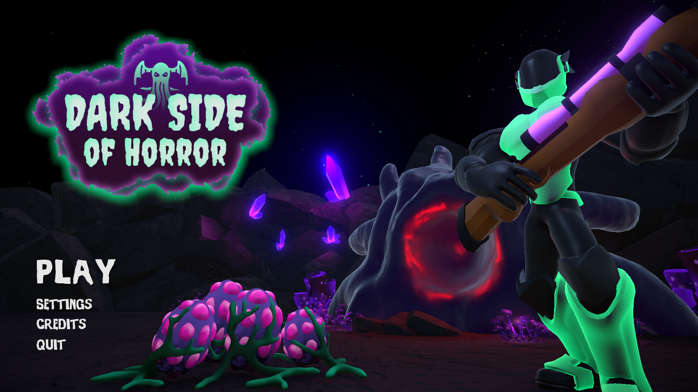

Lead Programmer · Shipped

Dark Side of Horror
A 1–4 player local co-op wave-survival shooter, built in Unity 6 and shipped publicly on itch.io. As lead programmer I built the player controller, a data-driven weapon framework (five weapons, two fire modes, Pack-A-Punch upgrades), a perk system, the co-op down-and-revive flow, and a Black Ops 2-style wave director that scales zombie count, health, and ranged-enemy fraction to the party size.
- Unity 6
- C#
- Co-op
- Co-op revive
- Weapons
- Perks
- Pooling
- Wave system